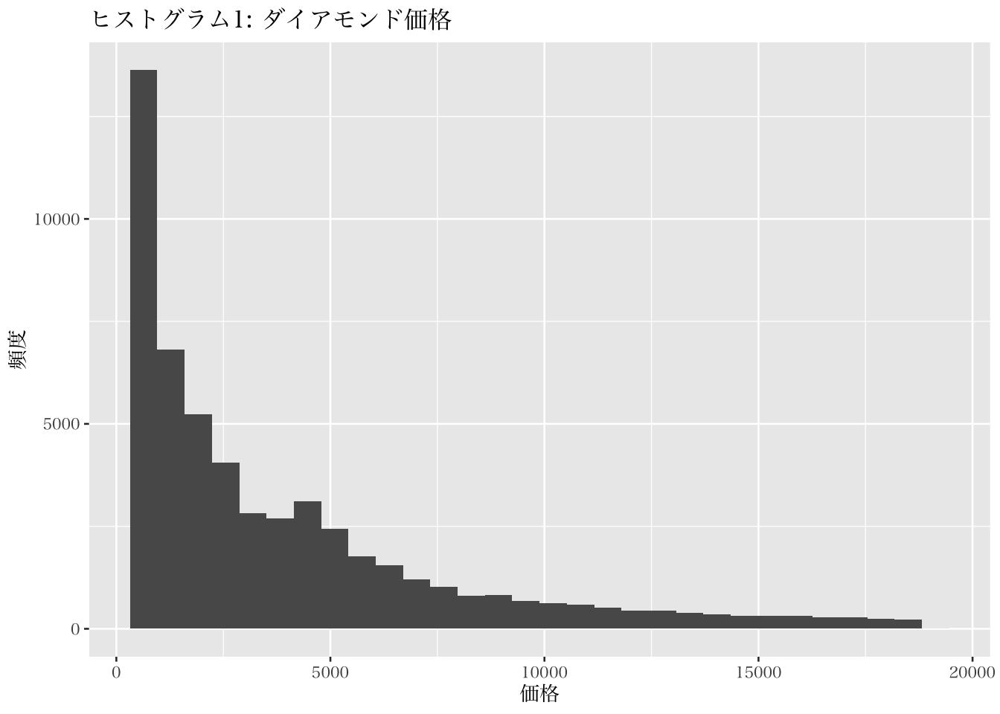
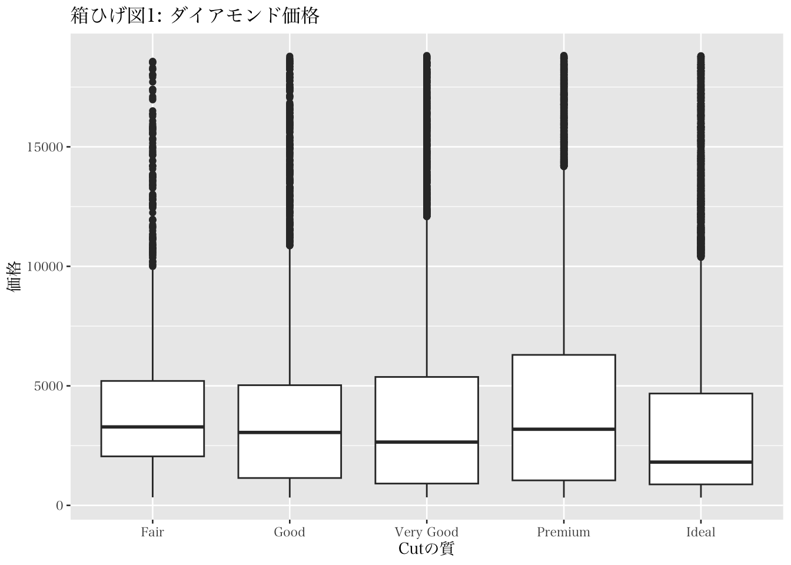

6.3 データの可視化
本書でのデータの可視化では、主にtidyverse内に含まれる ggplot2 というパッケージを用いる。データは一般的に、円グラフ、折れ線グラフ、帯グラフなどの様々なグラフを用いて視覚化される。しかしなが本節では、主にヒストグラム、箱ひげ図、バイオリンプロットをRでの実行例とともに紹介する。これらの図は、量的変数の分布を視覚的に示すことについて優れた可視化の方法だと言える。ここでは、ggplot2に内包されている diamonds データを用いて可視化を学ぶ（tidyverseを起動することで自動的に ggplot2も起動されるため、このタイミングでtidyverseを起動していない場合には、必要に応じて library(tidyverse) によってパッケージを起動してほしい）。diamonds データについては以下のように確認できる。
## # A tibble: 6 × 10
## carat cut color clarity depth table price x y z
## <dbl> <ord> <ord> <ord> <dbl> <dbl> <int> <dbl> <dbl> <dbl>
## 1 0.23 Ideal E SI2 61.5 55 326 3.95 3.98 2.43
## 2 0.21 Premium E SI1 59.8 61 326 3.89 3.84 2.31
## 3 0.23 Good E VS1 56.9 65 327 4.05 4.07 2.31
## 4 0.29 Premium I VS2 62.4 58 334 4.2 4.23 2.63
## 5 0.31 Good J SI2 63.3 58 335 4.34 4.35 2.75
## 6 0.24 Very Good J VVS2 62.8 57 336 3.94 3.96 2.48なお、Macのデスクトップ版でggplot2等を使うと日本語が文字化けするので、Macユーザーは別途以下のコマンドを実行する必要がある。
本書の可視化では、まず、ggplot2の ggplot() 関数を用いて図示化のためのオブジェクトを作成する。この関数では、以下の引数を指定する。
- data: 可視化に用いるデータフレームの指定
- mapping: データから抽出する変数と画面に表示される図との関係の指定
- mapping内で、
aes()関数（aesthetics）で視覚化に用いる変数とプロット要素間の接続を図ることも多い。
- mapping内で、
ggplot関数で作成された図示化オブジェクトには、着目するデータと変数が特定されている。続いて、ggplot()で作られたオブジェクトに対して、geom (geometry) 用いてグラフィックの層(layer)を加えることで図を作成する。このプロセスでは、geom_point() による散布図や、geom_histogram() によるヒストグラムなど、具体的な図表のタイプに対応する関数を利用することで、図を作成できる。また、geomに関する関数以降に labs() というラベルに関する関数を追加することで、図に必要な情報を加筆することが可能になる。
ggplot2を用いたデータ可視化の例として、まず本書はヒストグラムを描画する。ヒストグラムはデータの分布を離散的に示すものであり、連続変数を階級で分けて各階級の頻度を図示化する。一つの変数を扱った図なので、mapping引数ではひとつの変数を指定する。その上で作成した図示化オブジェクトに geom_histogram() を追加することでヒストグラムを描画する。以下では、ダイアモンドの価格の観測頻度についての可視化例である。価格の程度を離散的に区切り、その区切られた各範囲の価格を取る観測がデータ内にどれだけ存在するかを示している。
p1 <- ggplot(diamonds, mapping = aes(x = price))
p1 + geom_histogram() +
labs(x = "価格", y = "頻度",
title = "ヒストグラム1: ダイアモンド価格")
なお、縦軸を確率密度(density)に変えるときは、geom_density()を用いる。その際、fillという引数を設定すると、密度を範囲に色を塗ることができる (なお、“p1” というオブジェクトは再利用できるので、再びggplot()によって指定する必要はない)。
p1 + geom_density(fill = "black", alpha = 0.5) +
labs(x = "価格", y = "頻度",
title = "ヒストグラム2: ダイアモンド価格（geom_density）")箱ひげ図は、四分位数と四分位範囲等を図示化したもの。四分位数はデータを4等分する区切りの値であり、第一四分位はQ1、第二四分位はQ2、第三四分位はQ3、最大値はQ4で示される。四分位範囲はQ3-Q1の範囲で示されるものである。ここでは、Cutの質（Fair, Good, Very Good, Premium, Ideal）ごとに価格の分布を比べるため、複数の箱ひげ図を並べる例を提示する。
p2 <- ggplot(diamonds, mapping = aes(x = cut, y = price))
p2 + geom_boxplot() +
labs(x = "Cutの質", y = "価格",
title = "箱ひげ図1: ダイアモンド価格")
箱ひげ図を作成すると、ひげの上下に点が表示されることがある（上図では上部が太線のように見えている）。これは、外れ値の候補として全体の分布から離れて存在する観測値が示されている。ここで示される外れ値の候補は、Q1よりも四分位範囲\(\times 1.5\times 1.5\) 以上小さい、ないしは、Q3よりも四分位範囲\(\times 1.5\times 1.5\) 以上大きいかで特定される。外れ値がある場合、入力ミスなどのエラーではないか、異質な観測値でないか、を検討、確認することが必要になる。
バイオリンプロットは、箱ひげ図よりももう少し詳しくデータの分布を確認できる図である。ggplot2では、geom_violin() を用いる。例えば、先程の箱ひげ図をバイオリンプロットで示すと、以下のようになる。以下の図は、バイオリンプロット内に箱ひげ図を示すことでよりわかりやすい図を作成するように工夫している。
p2 + geom_violin() +
geom_boxplot(fill = "gray", width = 0.1) +
labs(x = "Cutの質", y = "価格",
title = "バイオリンプロット: ダイアモンド価格")バイオリンプロットで横に広がっているところは、ヒストグラムで言う山が高いところを意味しており、そこに多くのデータが集まっていることを示している。